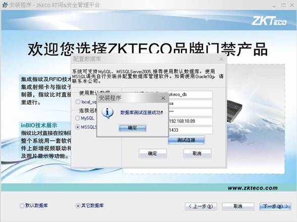
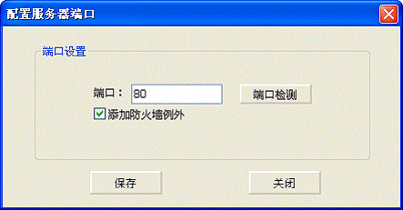
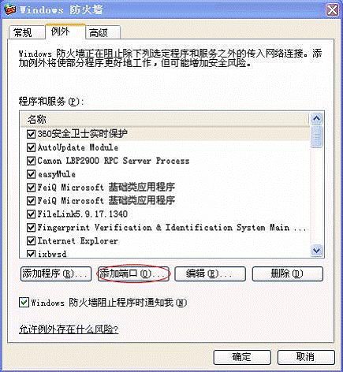
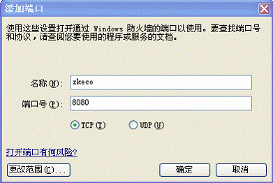

软件的安装
请将安装光盘放入光驱，双击光盘中的 setup安装文件，开始安装进程。
setup安装文件，开始安装进程。
注意：以下显示界面可能与您实际安装不完全相同，请以实际软件安装为准。
1．在安装程序窗口中弹出最终用户软件许可协议对话框，点选【我同意】，单击【下一步】。
2．输入并测试当前服务要使用的端口号，如果输入的端口号已被占用，将无法继续点击【下一步】。如果输入的端口可用，那么用户可以选择将【此端口添加防火墙例外】，保证服务器外的客户端浏览器可以通过该端口来访问服务器。单击【下一步】按钮。
3．点击【浏览】选择本软件的安装路径，默认安装在系统盘，如下图所示，单击【下一步】按钮。
注意：路径名中不能包含中文字符。
4.如下图所示，选择创建快捷方式的位置，单击【下一步】。
5.在界面中选择默认数据库，直接点击【下一步】开始安装程序。（如本机已安装sqlserver，则会提示要求先卸载或者选择其它数据库的方式进行配置。 ）
否则，请选择其它数据库（如是本机数据库需要在软件安装前进行）后，在界面右侧填入以下相关信息（以sqlserver数据库为例）：
数据库名称：zkeco_db；
用户名：sa；
密码：您在配置数据库过程中设置的安全密码；
主机地址：即安装了数据库服务器的主机IP地址（若本机安装了数据库服务器则填写本机IP地址）；
端口：即在配置数据库时设置的端口号（默认1433）；
填完后点击【测试连接】，系统提示【连接成功】，则点击【下一步】开始安装程序，否则，请检查后重试；
若需使用Mysql，请参考相关资料进行配置。
若需使用Oracle10g数据库，请联系本公司，获取相关安装包。

7.点击下一步，显示界面如下，提示选择数据库的备份路径。
8.选择子系统服务，如下图所示，可选择考勤、门禁、IC消费、ID消费、会议系统模块，考勤和门禁系统是默认必选的，其它为可选，IC消费、ID消费只能选择其一
9.如下图所示，单击【安装】按钮将开始安装程序，需要重新配置请单击【上一步】。
10.系统开始安装程序，如果您的系统安装了杀毒软件（如了360、瑞星、卡巴斯基等）或其它木马防火墙，可能会阻止安装程序的运行，并弹出安全提示（或类似提示），请全部选择“始终允许”，并直接将其添加到杀毒软件或木马防火墙的信任列表中，或在安装前暂时关闭上述软件或防火墙，以保证程序顺利安装。
11．系统提示是否重新启动计算机。电脑重启后服务器程序才能生效，选择【是】则立即重启，选择【否】后用户可以自行重启计算机。
12．程序安装结束后，会看到在【开始】—>【程序】—>【ZKECO 时间&安全管理平台】程序中，包含ZKECO 时间&安全管理平台、服务控制台、卸载ZKECO 时间&安全管理平台系统等项目。
点击程序菜单中的【服务控制台】，在电脑右下角的托盘中会出现【服务控制台】的图标，点击右键显示操作菜单如下所示：
软件安装完成后，请注意以下事项：
1.配置服务器端口：
在【服务控制台】的操作菜单中选择【配置服务器端口】，弹出如下界面：

点击测试端口（默认80端口），如不可用，可选择其他端口，若测试可用点击保存。进入系统时请在IP地址后增加“：端口号”。例如：端口设置为8080，在IE地址栏中则需输入http://127.0.0.1:8080。
2.在防火墙设置中，将设置好的端口设置成例外，其他电脑就可以访问。
在开始—>设置—>控制面板中，双击Windows防火墙，点击【例外】：

点击【添加端口】，弹出如下界面：

设置端口名称和端口号，如zkeco，8080，点击【确定】保存并退出。
3.启动/停止服务运行：
在安装完成后，请重启电脑。使用程序之前，请打开【服务控制台】，在操作菜单中选择“服务没有运行，点击此处启动运行”，以运行系统服务，再双击桌面ZKTime8.0考勤管理系统，运行程序；在使用结束并退出程序后，可以点击“服务正在运行，点击此处停止运行”停止运行服务，并点击【退出服务控制器】。
注意：在Windows 7/Vista等系统中，请右键点击【服务控制台】，选择【以管理员身份运行】。
4.配置数据库：
在使用过程中，如需更换数据库，请在【服务控制台】的操作菜单中选择【配置数据库】，出现如下界面：

先测试连接，当测试连接成功后才可以保存数据库配置信息。当成功保存配置信息，询问是否初始化数据库：
选择【是】则初始化系统数据库，选择【否】则退出操作。